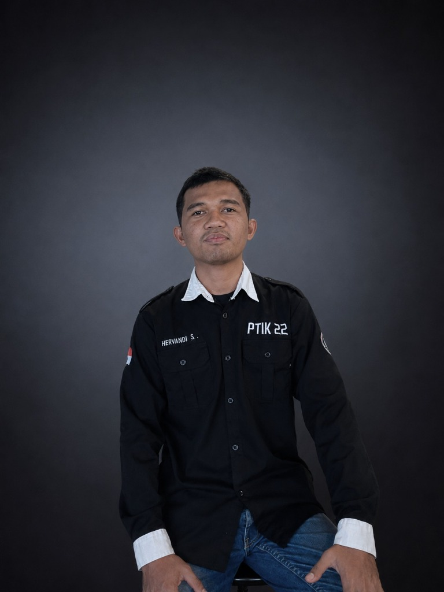
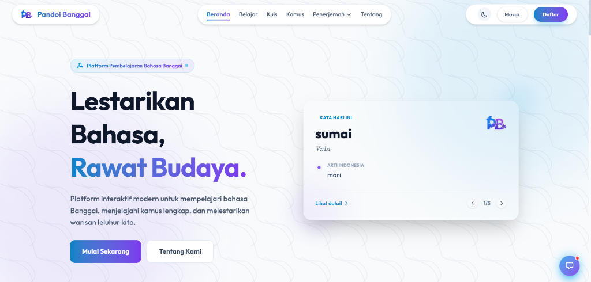
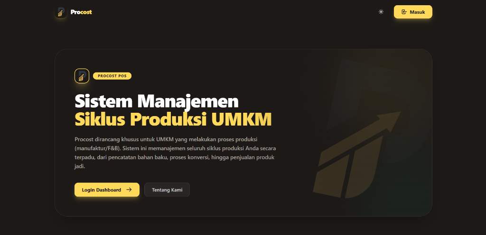
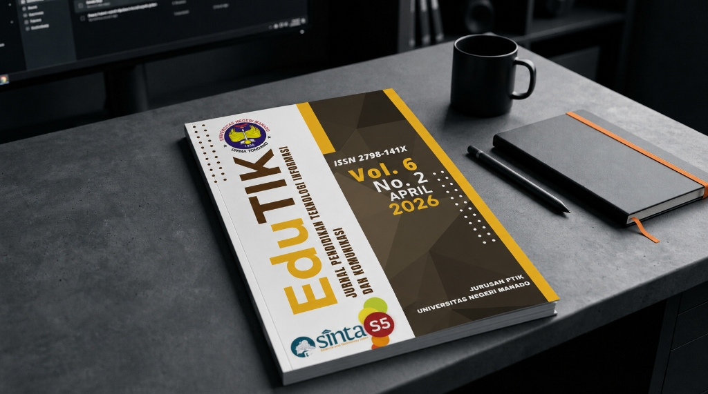
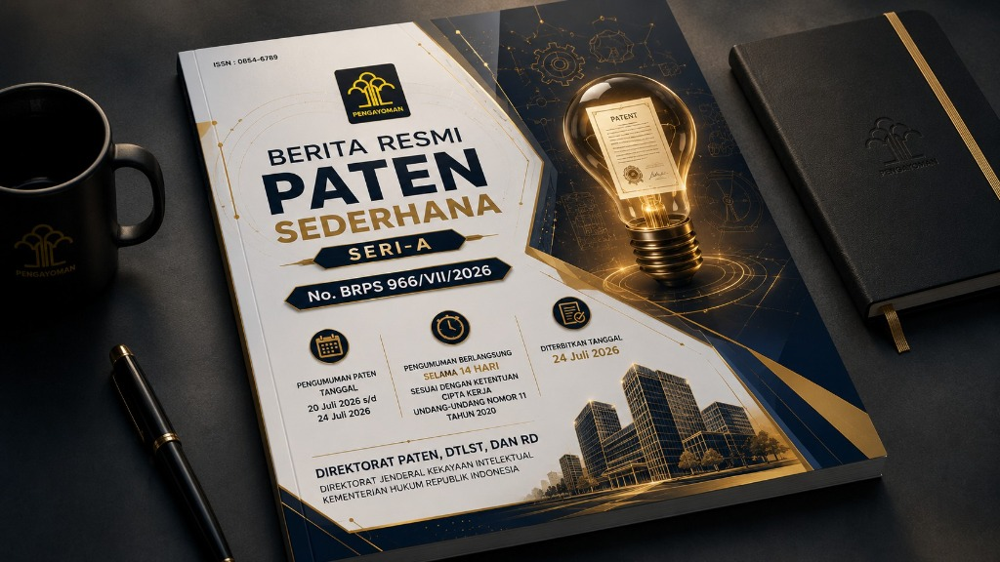

Web
Developer.
Halo, saya Hervandi Sipada. Berfokus pada pengembangan aplikasi web yang responsif dan modern. Memiliki pengalaman dalam merancang sistem fungsional menggunakan PHP, Laravel, JavaScript, serta Tailwind CSS.

Tentang Saya
Membangun web dengan
fokus pada performa dan detail.
Saya memiliki ketertarikan besar dalam pengembangan web. Saat ini, fokus utama saya adalah memperdalam ekosistem PHP dan membangun antarmuka pengguna menggunakan Tailwind CSS.
Saya percaya bahwa kode yang baik adalah kode yang mudah dipelihara dan dibaca. Pendekatan ini membantu saya dalam memberikan pengalaman pengguna yang optimal dengan performa yang efisien.
Keahlian
Teknologi yang Saya Gunakan
Front-end
Membangun antarmuka pengguna yang responsif dan interaktif.
Back-end
Menerapkan logika sistem dan arsitektur server menggunakan pola MVC.
Data & Research
Manajemen data terstruktur dan penelitian penulisan ilmiah.
Portofolio
Proyek Terpilih

Pandoi Banggai
Platform media pembelajaran untuk mempelajari Bahasa Banggai. Dilengkapi dengan fitur penerjemah digital, manajemen profil, dan sistem kuis interaktif.

Procost
Sistem Manajemen Siklus Produksi UMKM. Dirancang khusus untuk UMKM yang melakukan proses produksi (manufaktur/F&B). Mengelola seluruh siklus produksi secara terpadu, dari pencatatan bahan baku, proses konversi, hingga penjualan produk jadi.
Publikasi & HKI
Karya Ilmiah & Kekayaan Intelektual

Pengembangan Aplikasi Media Pembelajaran Bahasa Banggai–Indonesia Berbasis Web untuk Mendukung Pembelajaran Muatan Lokal di SMA Negeri 1 Banggai
Dipublikasikan pada EduTIK: Jurnal Pendidikan Teknologi Informasi dan Komunikasi.

Sistem Informasi Akuntansi: Siklus Produksi Berbasis Web UMKM
No. Pengumuman: 2026/S/02324 | 22 Juli 2026 | Halaman 114
Invensi ini mengenai sistem informasi akuntansi siklus produksi berbasis web yang dirancang untuk membantu Usaha Mikro, Kecil, dan Menengah (UMKM) dalam mengelola proses produksi, persediaan, serta pencatatan keuangan secara terintegrasi dan otomatis.
Pengembangan Media Pembelajaran Bahasa Banggai-Indonesia Berbasis Web di SMA Negeri 1 Banggai
No. Pencatatan: 001282033 | 13 Juni 2026
Karya Tulis (Artikel). Bahasa Banggai merupakan bahasa daerah yang tergolong terancam punah dengan tingkat pemertahanan di ranah pendidikan yang hanya mencapai 6,11%. Penelitian ini mengembangkan aplikasi Pandoi Banggai sebagai sarana pendukung pembelajaran muatan lokal.
Mari Berkolaborasi
Bersama.
Saya terbuka untuk diskusi mengenai proyek baru, kolaborasi tim, maupun peluang kerja sebagai Web Developer.
Hubungi Saya